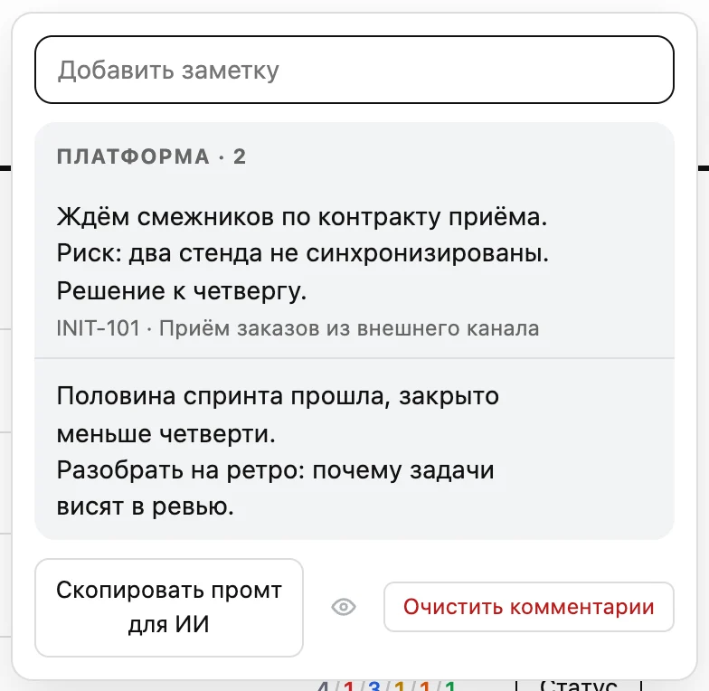

01Техлид оставляет комментарий к эпику
Заметки PO к отчёту спринта — учти их при разборе спринта и в ответах.
Команда «Платформа» · Спринт 74 · доска «Scrum Board Платформа».
1. [INIT-101 · Приём заказов] Ждём смежников по контракту приёма. Риск: два стенда не синхронизированы. Решение к четвергу.
2. [без привязки] Половина спринта прошла, закрыто меньше четверти. Разобрать на ретро: почему задачи висят в ревью.
02PO жмёт «Скопировать промт для ИИ»
› (вставлен промт из отчёта)
› Синхронизируй с Jira
● Читаю INIT-101 и задачи спринта…
Предлагаю:
1. Комментарий в INIT-101:
«Риск: стенды не синхронизированы, решение к чт»
2. Задача в INIT-101:
«Синхронизировать два стенда»
3. Метка «ретро» на задачах в ревью
Применить? да
03Claude Code предлагает правки, PO подтверждает
✓INIT-101 — комментарий
✓INIT-140 — задача создана
✓метка «ретро» на 3 задачах
↻/actual-sprint — отчёт пересобран
04Трекер и отчёт синхронизированы